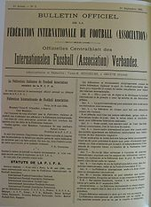
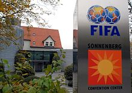

FIFA HISTORY
The need for a single body to oversee association football became apparent at the beginning of the 20th century with the increasing popularity of international fixtures. FIFA was founded in Paris on 21 May 1904; the French name and acronym persist even outside French-speaking countries. The founding members were the national associations of Belgium, Denmark, France, the Netherlands, Spain (represented by Madrid Football Club; the Spanish federation was not created until 1913), Sweden and Switzerland. Also, that same day, the German Association declared its intention of affiliating through a telegram.

The first president of FIFA was Robert Guérin. Guérin was replaced in 1906 by Daniel Burley Woolfall from England, by then a member of the association. The first tournament FIFA staged, the association football competition for the 1908 Olympics in London was more successful than its Olympic predecessors, despite the presence of professional footballers, contrary to the founding principles of FIFA.
Membership of FIFA expanded beyond Europe with the application of South Africa in 1908, Argentina and Chile in 1912, and Canada and the United States in 1913.

During World War I, with many players sent off to war and the possibility of travel for international fixtures severely limited, the organisation's survival was in doubt. Post-war, following the death of Woolfall, the organisation was run by Dutchman Carl Hirschmann. It was saved from extinction, but at the cost of the withdrawal of the Home Nations (of the United Kingdom), who cited an unwillingness to participate in international competitions with their recent World War enemies. The Home Nations later resumed their membership.
The FIFA collection is held by the National Football Museum in England.
The first official match between representatives of two nations was between England and Scotland in 1872 at Hamilton Crescent, Partick, Glasgow [1], finishing in a 0–0 draw. The following year at the Oval, England enjoyed a 4–2 victory over the travelling Scots. This was followed by the creation of the world's second national football association, the Scottish Football Association in 1873. Previously the Football Association had been the world's only governing body, though codified football was being played only in the United Kingdom at this stage.
With the number of inter-nation matches increasing as football spread, the need for a global governing body emerged. Initially, it was intended to reflect the formative role of the British in football's history[clarification needed], but the football associations of the Home Nations unanimously rejected such a body. This was led by rejection from Football Association president Lord Kinnaird. Thus the nations of continental Europe decided to go it alone and 'FIFA' was born in Paris, uniting the Football Associations of France, Belgium, Denmark, Netherlands, Spain, Sweden, and Switzerland.
The initial statutes of FIFA stated that:
- Only the represented National Associations would be recognised.
- Clubs and players could only play for two National Associations at a time.
- All Associations would recognise the suspension of a player in any Association.
- Matches were to be played according to the "Laws of the Game of the Football Association Ltd".
- Each National Association was to pay an annual fee of 50 French Francs.
- Only FIFA could organise International Matches.
These statutes came into effect on 1 September, by which time Germany had also joined by Telegram. The first FIFA Congress was held on 23 May – Robert Guérin was elected President, Victor E. Schneider of Switzerland and Carl Anton Wilhelm Hirschmann of the Netherlands were made Vice Presidents, and Louis Muhlinghaus of Belgium was appointed Secretary and Treasurer with the help of Ludvig Sylow of Denmark.
Early attempts at the organization of a tournament began, but without the British countries this failed. England, however, joined on 14 April 1905, thanks to great efforts by Baron Edouard de Laveleye who was made the first honorary member of FIFA. In 1906, Daniel Burley Woolfall took over as president, making strides to uniformity in the globe's laws.
FIFA continued to expand in federations and influence, being able to monopolize international matches. However, its organizational skills were still not refined, and it was the Football Association which organized the football tournaments at the 1908 and 1912 Olympic Games, both won by Great Britain.
In 1909 South Africa (the first non-European member) joined, and Argentina and Chile followed in 1912. The USA and Canada entered just before World War I in 1913
SOURCE:
BACK